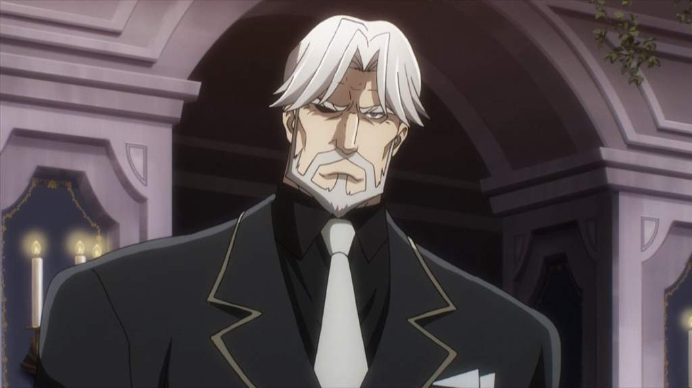

Unlike most Overlord characters we’ve discussed above, Sebas Tian is a butler, not a Floor Guardian. He normally takes the appearance of a charming old man with black suits like butler.
He is the leader of the combat maids group called Pleiades Six Stars, which in charge of defending the 9th floor so that Momonga and his guild members can prepare for the last battle in Throne Room.
Like his creator Touch Me, Sebas Tian has a strong sense of justice he does not despise any sort of races. He believes in human’s good nature and readies to help the weak.
The only thing he despises is peoplewith wicked nature and he will ready to obliterate any sort of dangers poses to Nazarick. This also results in Sebas Tian’s conflict with Demiurge since they have totally opposite natures.
Sebas Tian is a true monk who excels at unarmed combat. He is considered to be among the most powerful warriors in Nazarick. It is said that if he transformed into his true form, he can even surpass Albedo and Cocytus. Despite not learning any sort of magic, Sebas Tian is still capable of healing thanks to his Ki Master abilities.